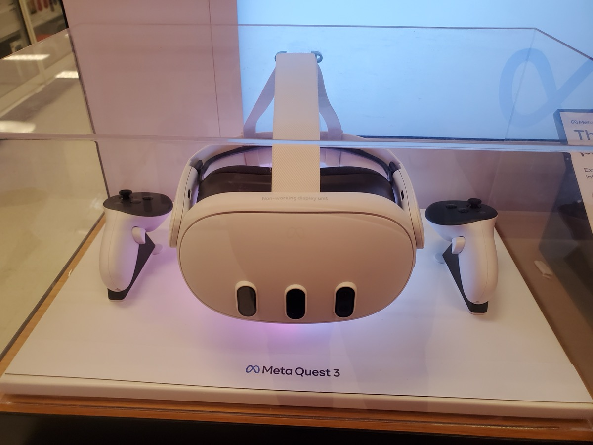

משקפי ה-Ray-Ban של Meta הם אחד המוצרים המעניינים ביותר שיצאו לשוק ה-AI הלביש בשנים האחרונות. לא בגלל שהם מהפכניים מבחינה טכנולוגית — אלא בגלל שהם נראים בדיוק כמו משקפי שמש רגילים. אין מסך מוקרן, אין מחשב ענק על הראש — רק מסגרת Ray-Ban Wayfarer או Headliner קלאסית, עם כמה תוספות חכמות.

מה בדיוק יש בתוך המשקפיים?
הדגם הנוכחי (2024-2025) כולל:
- מצלמה קדמית 12MP עם יכולת צילום תמונות ווידאו (עד 60 שניות)
- רמקולים פתוחים בזרועות המשקפיים — שמע ישירות לאוזן מבלי לחסום אותה
- מיקרופון מערכת 5 ערוצים לביטול רעש מרשים
- עוזר AI מובנה — Meta AI המבוסס על Llama 3, עם גישה ל-GPT-4 דרך שותפות
- סוללה ל-4 שעות שימוש רצוף, עם קייס טעינה ל-36 שעות סה"כ
- חיבור Bluetooth ו-USB-C לסנכרון עם אפליקציית Meta View
מה ה-AI בפועל יכול לעשות?
כאן מגיע החלק המעניין. כשאתה אומר "Hey Meta", העוזר מתעורר ויכול:
- לתאר מה הוא "רואה" דרך המצלמה — שאלות כמו "מה הצמח הזה?" או "איך קוראים לבניין הזה?" מקבלות תשובה קולית
- לתרגם טקסט שהמצלמה קולטת בזמן אמת
- לענות על שאלות כלליות בלי לפתוח את הטלפון
- להתקשר ולשלוח הודעות ב-WhatsApp, Messenger ו-Instagram
- לנגן מוזיקה מ-Spotify ו-Amazon Music
- לנווט עם הוראות קוליות מ-Google Maps
הפיצ'ר של "ראיית AI" הוא הכי מרשים — אתה מסתכל על תפריט במסעדה ושואל "מה כדאי להזמין אם אני צמחוני?" והעוזר יקרא את התפריט ויענה. זה עובד אפילו בעברית, אם כי באנגלית בצורה טובה יותר.
ביצועים בשטח — מה עובד טוב ומה פחות
השתמשנו במשקפיים בתל אביב ובירושלים במשך שבועיים. הממצאים:
- איכות שמע מצוינת — הרמקולים הפתוחים הפתיעו לטובה. בסביבה שקטה השמע ברור וחזק
- ביטול רעש — טוב מאוד למיקרופון, הקלטות יצאו נקיות גם ברחוב
- זמן תגובה AI — כ-2-3 שניות לשאלה רגילה, 4-5 שניות לניתוח תמונה
- עברית — AI מבין שאלות בעברית אבל עונה לעיתים קרובות באנגלית. Meta הודיעה על שיפורים
- חום — המשקפיים מתחממים קצת אחרי 30 דקות שימוש אינטנסיבי
- אינטגרציה עם ישראל — Google Maps עובד בעברית, WhatsApp מושלם
פרטיות — הנושא שחייבים לדון בו
יש נורית LED קטנה שנדלקת כשהמצלמה פעילה. אבל בפועל, אנשים לא שמים לב. זה מעלה שאלות אמיתיות על פרטיות ברחוב הישראלי. Meta אוספת נתוני שימוש, ותמונות שהעלית לניתוח AI עוברות לשרתים שלהם. אם פרטיות חשובה לך — כדאי לקרוא את מדיניות הפרטיות לפני הרכישה.
מחיר ואיפה לקנות בישראל
המחיר הרשמי הוא $299 בארה"ב. בישראל אין מכירה רשמית, אבל ניתן לרכוש דרך:
- Amazon.com עם משלוח לישראל (כ-$30-50 משלוח) — סה"כ כ-1,200-1,400 ₪
- חנויות יבוא אישי כמו ZAP Global — מחירים דומים
- יד שנייה בפייסבוק מרקטפלייס ישראלי — כ-900-1,100 ₪
שימו לב: אחריות לא תקפה בישראל, ותמיכה תצטרכו לפנות ישירות למטא.
יתרונות וחסרונות — סיכום
- יתרונות: עיצוב מדהים שנראה כמו משקפיים רגילים, AI שימושי בחיי יום-יום, שמע טוב, מצלמה נוחה לצילומי POV
- חסרונות: תמיכה חלקית בעברית, אין מסך (נשמע מוזר אבל לפעמים חסר), מחיר גבוה לגאדג'ט משלים, שאלות פרטיות
למי זה מתאים?
אם אתה רוצה להוסיף AI לחיים שלך בצורה שקטה ולא מסיחת דעת — Meta Ray-Ban הם הבחירה הכי טובה בשוק כרגע. הם עובדים, הם נראים רגיל, וה-AI מוסיף ערך אמיתי. אם אתה מצפה לחוויית AR מלאה — עדיין לא הגענו לשם.